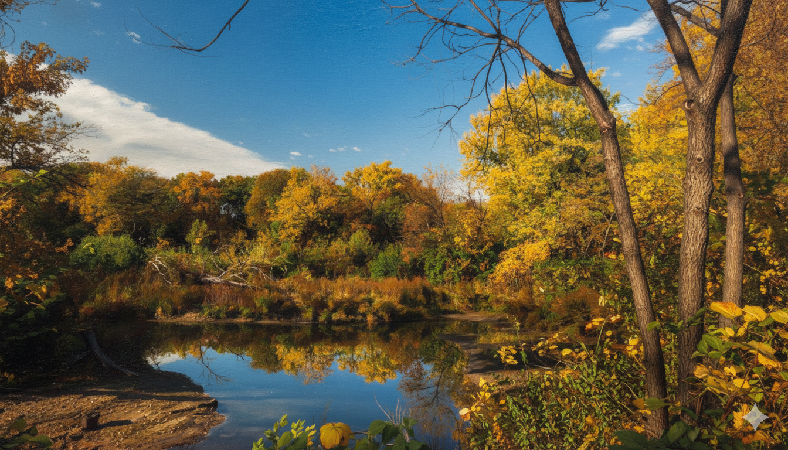
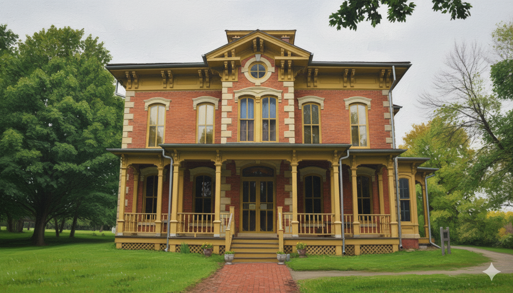
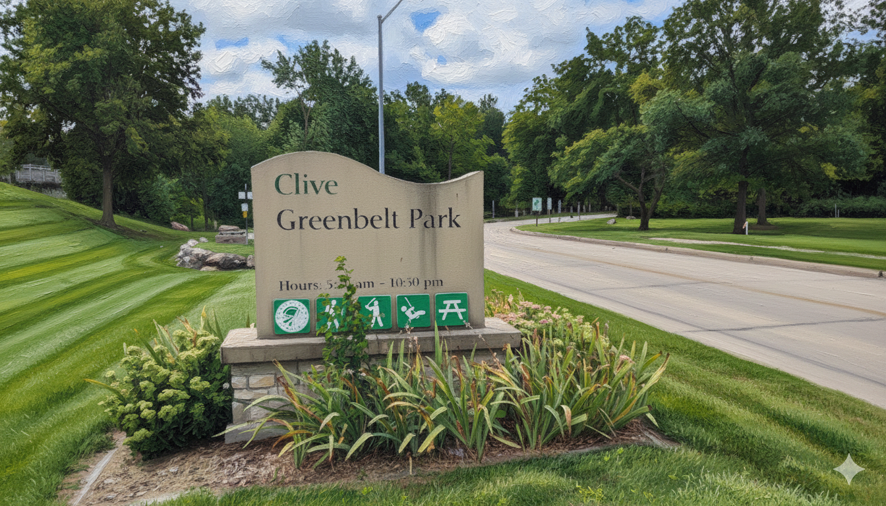
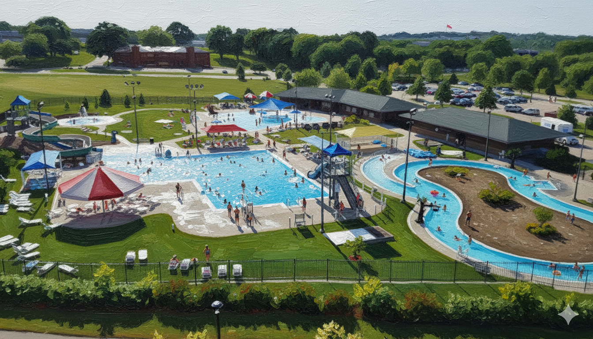
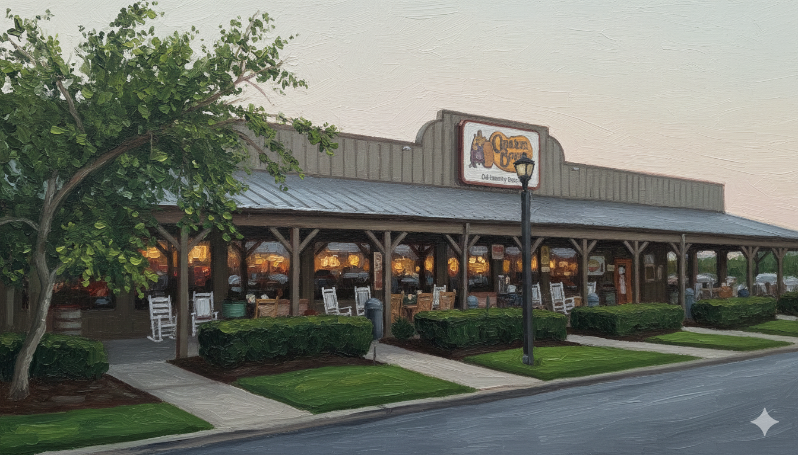
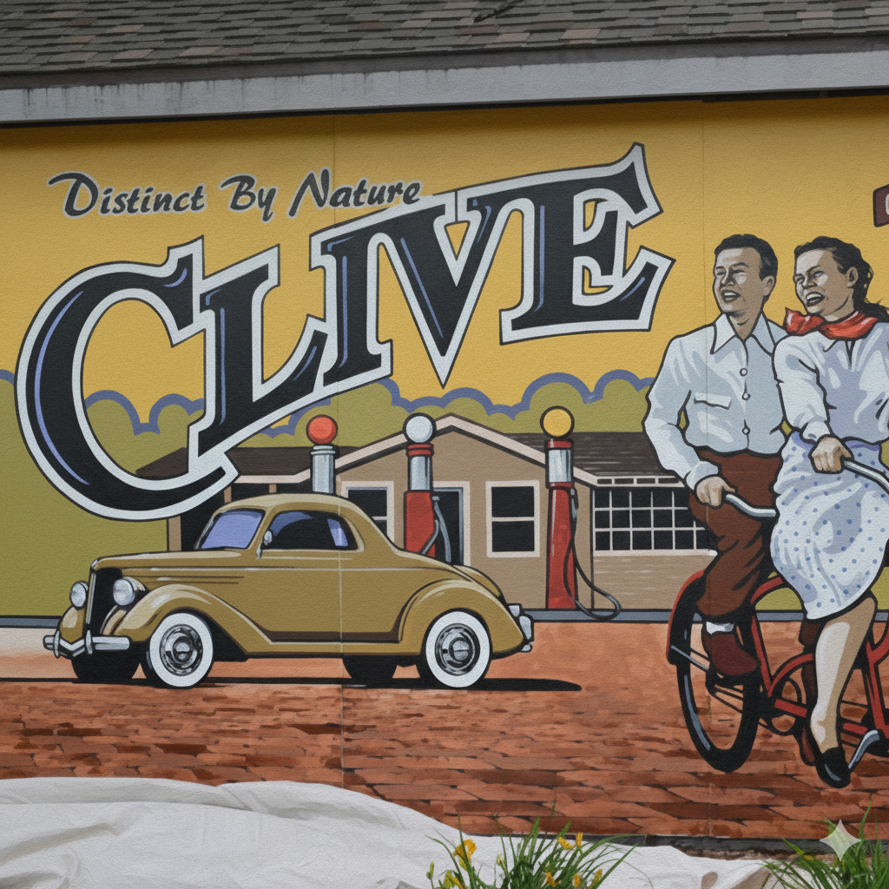
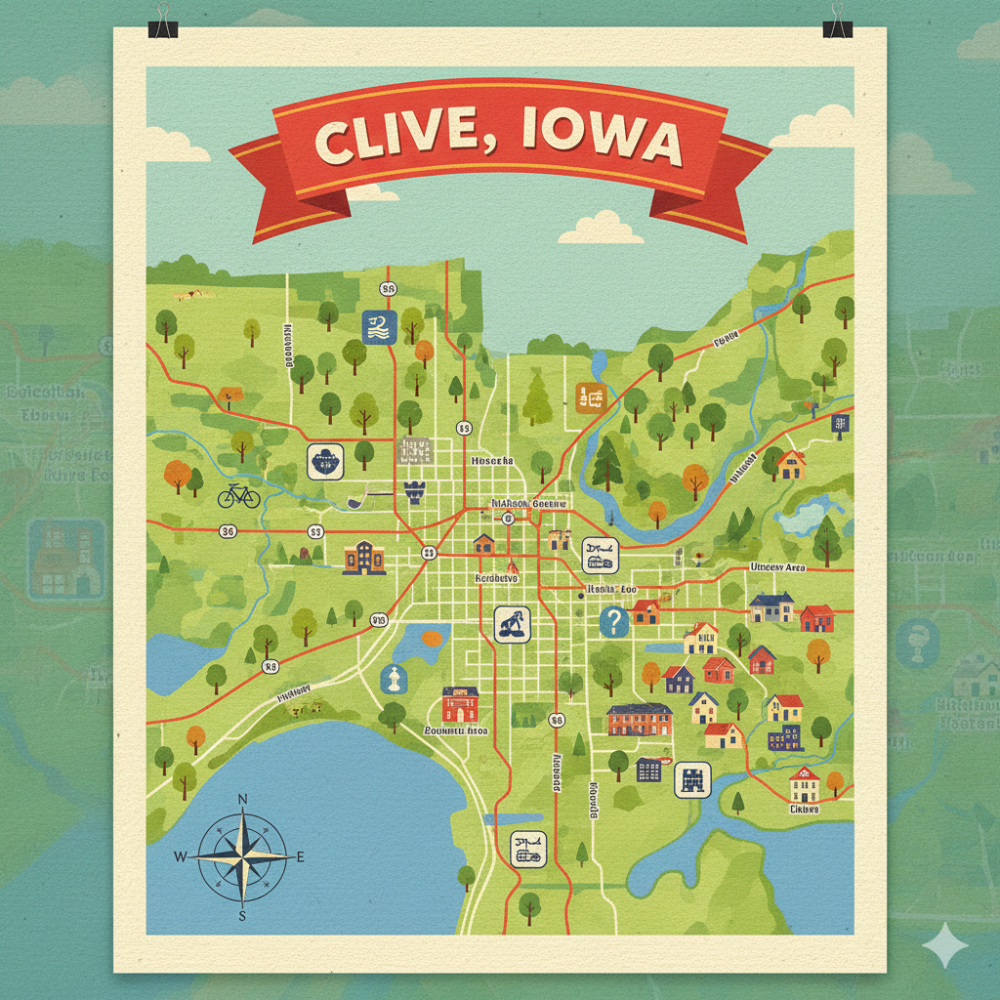

A peaceful green suburb just 10 miles west of Downtown Des Moines.
Founded in 1882, Clive began as a coal mining town and a vital railroad shipping point between St. Louis and Des Moines. While it officially became a city in 1956, its history is preserved at the Swanson House and the restored 1882 Depot.
Today, it is a thriving suburb of ~18,700 residents spanning Polk and Dallas counties, known for its high quality of life and the motto "Distinct by Nature".

Perfect for the Aquatic Center loop.
This famous paved trail runs along the winding Walnut Creek, connecting the entire city. It connects to the larger Central Iowa trail network, making it a hub for cyclists and runners.

Campbell Park, Linnan Park, and the Aquatic Center offer fun for all ages.
View Map →
The biggest summer event! Live music, food, and the famous 'Thunder Over Clive' fireworks.
Event Details →
Visit the commercial zones along 86th St, Hickman Rd, and University Ave.
Find Food →
Discover curated sculptures and murals integrated directly into the Greenbelt.
See Collection →
Clive is perfectly positioned at the crossroads of I-35 and I-80. Whether you are commuting to downtown Des Moines or heading out for a road trip, you are connected to everything.